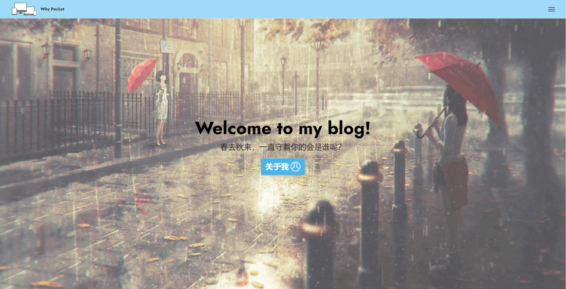
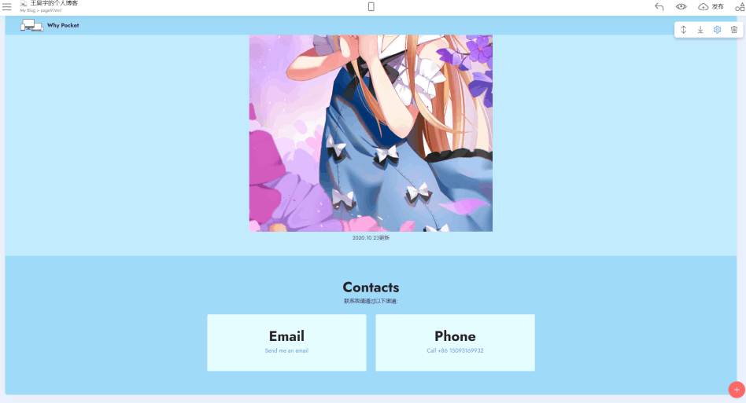

For You
感谢您参观我的个人博客，目前还在完善中，下面是更新日志。
21 Oct 2020
博客主页建立

仅有一个主页供观看，没有任何交互式按钮起作用。
博客与域名互相连接

域名成功解析，和博客的域名绑定跳转，同时博客主页和另外的个人页面联动页完成。
22 Oct 2020
23 Oct 2020
博客框架初步完成

“外壳”部分基本完成，还有一些不能用框架实现的交给之后的代码完成。分支页面加入了一个loading页面使得后续进入图片加载自然。